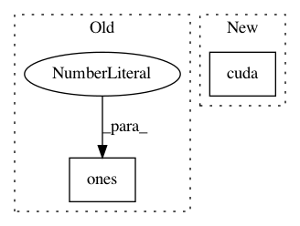

1a6f95dc2d715783b358f4bca267d099efd3ac31,parlai/core/torch_generator_agent.py,TorchGeneratorAgent,_dummy_batch,#TorchGeneratorAgent#Any#Any#,542
Before Change
return Batch(
text_vec=torch.ones(batchsize, maxlen).long().cuda(),
label_vec=torch.ones(batchsize, 2).long().cuda(),
text_lengths=[maxlen] * batchsize,
)
After Change
If your model uses additional inputs beyond text_vec and label_vec,
you will need to override it to add additional fields.
text_vec = (
torch.arange(1, maxlen + 1) // need it as long as specified
.clamp(max=3) // cap at 3 for testing with tiny dictionaries
.unsqueeze(0)
.expand(batchsize, maxlen)
.cuda()
)
// label vec has two tokens to make it interesting, but we we can"t use the
// start token, it"s reserved.
label_vec = (
torch.LongTensor([self.END_IDX, self.NULL_IDX])
In pattern: SUPERPATTERN
Frequency: 3
Non-data size: 2
Instances
Project Name: facebookresearch/ParlAI
Commit Name: 1a6f95dc2d715783b358f4bca267d099efd3ac31
Time: 2020-06-09
Author: roller@fb.com
File Name: parlai/core/torch_generator_agent.py
Class Name: TorchGeneratorAgent
Method Name: _dummy_batch
Project Name: facebookresearch/ParlAI
Commit Name: 8efba770f7f34fd8a1b62f93e4dcc9f6ff2d7b60
Time: 2019-08-12
Author: roller@fb.com
File Name: projects/wizard_of_wikipedia/generator/agents.py
Class Name: EndToEndAgent
Method Name: _dummy_batch
Project Name: rusty1s/pytorch_geometric
Commit Name: 1a8ca5d5d6ca5cb0e3494cd5c9e77759909ec955
Time: 2017-11-27
Author: matthias.fey@tu-dortmund.de
File Name: torch_geometric/nn/functional/max_pool_voxel/max_pool_voxel_test.py
Class Name: MaxPoolVoxelGPUTest
Method Name: test_max_pool_voxel